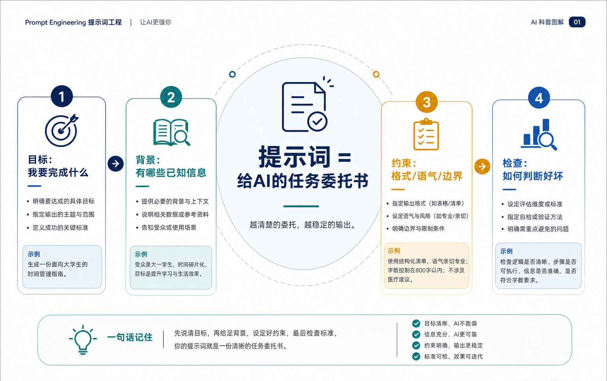
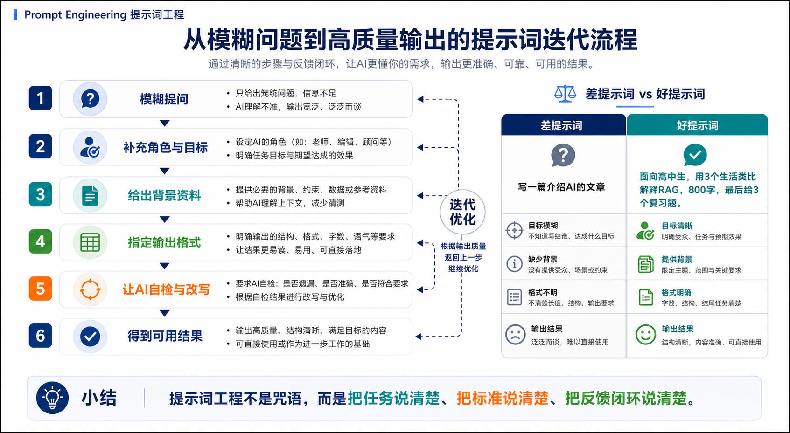

01
先说目标
不要只说“写一个东西”，而要说清楚要解决什么问题、给谁使用、成功标准是什么。
为什么会提问的人，能让 AI 少跑偏、多产出可用结果？
它解释的是我们每天怎样与大模型协作，而不是工程师才懂的内部代码。
它把上下文窗口、Agent、RAG 和对齐，落到一次具体任务里。
同一个模型，任务说明越清楚，输出越稳定、越容易复用。
提示词工程是普通人与大模型协作的第一层“操作系统”。
提示词工程重要，不是因为它能让人背会几句“神奇口令”，而是因为大模型把很多软件的入口从按钮、菜单、表单，变成了自然语言。你怎么描述任务，AI 就怎么理解任务；你不给背景，它只能猜；你不说标准，它就不知道什么算好。
同一个模型，面对“帮我写一份方案”和“面向高中生，用三个生活类比解释 RAG，800 字，最后给 3 个复习问题”，输出质量会完全不同。差别不在模型是否突然变聪明，而在任务是否被说清楚。
当 AI 进入客服、办公、搜索、编程和 Agent 工作流时，提示词就像一份任务合同。它规定目标、角色、资料、边界、输出格式和检查标准。理解提示词工程，等于理解普通人如何把 AI 从“会聊天”变成“能帮忙做事”。

想象你让一位新来的实习生帮你做一份竞品分析。如果你只说“做个分析”，他可能不知道分析谁、给谁看、要多长、要不要表格、重点是价格还是功能。最后做出来的东西不一定差，但很可能不合你的用。
更好的布置方式是：你告诉他目标是给产品经理做决策参考；竞品是 A、B、C；重点比较功能、价格、用户评价；输出成一页表格加三条建议；如果资料不足，先列出需要补充的问题。
提示词工程就是这种“清楚布置任务”的能力。AI 不是真的读心，它是在根据你给出的语言线索预测下一步该怎么做。线索越完整，输出越稳定；标准越清楚，修改越省力。

不要只说“写一个东西”，而要说清楚要解决什么问题、给谁使用、成功标准是什么。
告诉 AI 任务场景、已有资料、读者水平、行业限制和你已经尝试过的方法。
角色不是装饰，而是帮助模型选择语气、知识范围和判断角度，例如老师、审稿人、产品经理、客服主管。
明确长度、结构、格式、语言风格、是否需要表格、是否要引用来源、哪些内容不能出现。
一两个示例能让 AI 更快理解你要的风格，像给学生看标准答案和扣分点。
让 AI 自检遗漏、歧义和不确定点，再根据你的反馈迭代，而不是指望第一次就完美。
| 术语 | 专业解释 | 白话解释 |
|---|---|---|
| Prompt | 专业解释：输入给模型的任务指令、上下文和约束集合。 | 白话解释：你对 AI 说的“任务说明书”。 |
| System Prompt | 专业解释：系统层面的高优先级规则，用来设定模型身份、边界和行为要求。 | 白话解释：像课堂纪律或公司制度，告诉 AI 哪些底线不能越过。 |
| User Prompt | 专业解释：用户在一次对话中提出的具体问题或任务请求。 | 白话解释：你这一轮真正想让 AI 帮你做的事。 |
| Few-shot 示例 | 专业解释：在提示词中提供少量输入输出样例，引导模型模仿目标格式或风格。 | 白话解释：先给 AI 看几份标准答案，它就更容易照着做。 |
| 结构化输出 | 专业解释：要求模型按表格、JSON、清单、章节等固定格式返回结果。 | 白话解释：别让 AI 随便聊，要求它把结果装进规定好的盒子里。 |
| Prompt Injection | 专业解释：恶意或无关文本试图覆盖原有指令、诱导模型泄露信息或执行错误操作。 | 白话解释：有人把“忽略前面规则”藏进资料里，试图骗 AI 跑偏。 |
| 上下文窗口 | 专业解释：模型一次能读取和利用的文本容量范围。 | 白话解释：AI 的临时工作台，东西放太多会挤、会漏、会抓不住重点。 |
一个真实常见的场景是：运营团队用 AI 写一封活动复盘邮件。差提示词是“写一封复盘邮件”。AI 可能写得流畅，但重点泛泛，缺少数据，也不知道收件人关心什么。
更好的提示词会写清楚：收件人是部门负责人；活动目标是拉新；输入数据包括曝光、点击、转化、成本；邮件要先给结论，再列三条证据，最后给下周行动建议；语气专业克制；如果数据不足，先标注“不确定”。
这样做的效果不是让 AI 变成专家，而是让它更像一个有任务边界的助理。它知道该从哪些信息里提炼结论，也知道输出要方便人直接转发、修改或决策。